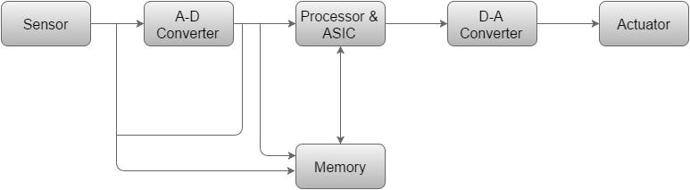

Nanotechnology
What is Nanotechnology?
Nanotechnology is the understanding and control of matter at the nanoscale, at dimensions between approximately 1 and 100 nanometers, where unique phenomena enable novel applications. Matter can exhibit unusual physical, chemical, and biological properties at the nanoscale, differing in important ways from the properties of bulk materials, single atoms, and molecules. Some nanostructured materials are stronger or have different magnetic properties compared to other forms or sizes of the same material. Others are better at conducting heat or electricity. They may become more chemically reactive, reflect light better, or change color as their size or structure is altered. Although modern nanoscience and nanotechnology are relatively new, nanoscale materials have been used for centuries. Gold and silver nanoparticles created colors in the stained-glass windows of medieval churches hundreds of years ago. The artists back then just didn’t know that they were using nanotechnology to create these beautiful works of art! Nanotechnology encompasses nanoscale science, engineering, and technology in fields such as chemistry, biology, physics, materials science, and engineering. Nanotechnology research and development involves imaging, measuring, modeling, and manipulating matter between approximately 1–100 nanometers.
Applications of Nanotechnology
After more than 20 years of basic nanoscience research and more than fifteen years of focused R&D under the NNI, applications of nanotechnology are delivering in both expected and unexpected ways on nanotechnology’s promise to benefit society. Nanotechnology is helping to considerably improve, even revolutionize, many technology and industry sectors: information technology, homeland security, medicine, transportation, energy, food safety, and environmental science, among many others. Described below is a sampling of the rapidly growing list of benefits and applications of nanotechnology.
Everyday Materials and Processes
- Nanoscale additives to or surface treatments of fabrics can provide lightweight ballistic energy deflection in personal body armor, or can help them resist wrinkling, staining, and bacterial growth.
- Clear nanoscale films on eyeglasses, computer and camera displays, windows, and other surfaces can make them water- and residue-repellent, antireflective, self-cleaning, resistant to ultraviolet or infrared light, antifog, antimicrobial, scratch-resistant, or electrically conductive.
- Nanoscale materials are beginning to enable washable, durable “smart fabrics” equipped with flexible nanoscale sensors and electronics with capabilities for health monitoring, solar energy capture, and energy harvesting through movement.
- Lightweighting of cars, trucks, airplanes, boats, and space craft could lead to significant fuel savings. Nanoscale additives in polymer composite materials are being used in baseball bats, tennis rackets, bicycles, motorcycle helmets, automobile parts, luggage, and power tool housings, making them lightweight, stiff, durable, and resilient. Carbon nanotube sheets are now being produced for use in next-generation air vehicles. For example, the combination of light weight and conductivity makes them ideal for applications such as electromagnetic shielding and thermal management.
- Nano-bioengineering of enzymes is aiming to enable conversion of cellulose from wood chips, corn stalks, unfertilized perennial grasses, etc., into ethanol for fuel. Cellulosic nanomaterials have demonstrated potential applications in a wide array of industrial sectors, including electronics, construction, packaging, food, energy, health care, automotive, and defense. Cellulosic nanomaterials are projected to be less expensive than many other nanomaterials and, among other characteristics, tout an impressive strength-to-weight ratio.
Electronics and IT Applications
- Transistors, the basic switches that enable all modern computing, have gotten smaller and smaller through nanotechnology. At the turn of the century, a typical transistor was 130 to 250 nanometers in size. In 2014, Intel created a 14 nanometer transistor, then IBM created the first seven nanometer transistor in 2015, and then Lawrence Berkeley National Lab demonstrated a one nanometer transistor in 2016! Smaller, faster, and better transistors may mean that soon your computer’s entire memory may be stored on a single tiny chip.
- Flexible, bendable, foldable, rollable, and stretchable electronics are reaching into various sectors and are being integrated into a variety of products, including wearables, medical applications, aerospace applications, and the Internet of Things. Flexible electronics have been developed using, for example, semiconductor nanomembranes for applications in smartphone and e-reader displays. Other nanomaterials like graphene and cellulosic nanomaterials are being used for various types of flexible electronics to enable wearable and “tattoo” sensors, photovoltaics that can be sewn onto clothing, and electronic paper that can be rolled up. Making flat, flexible, lightweight, non-brittle, highly efficient electronics opens the door to countless smart products.
- Nanoparticle copper suspensions have been developed as a safer, cheaper, and more reliable alternative to lead-based solder and other hazardous materials commonly used to fuse electronics in the assembly process.
- Ultra-high definition displays and televisions are now being sold that use quantum dots to produce more vibrant colors while being more energy efficient.
- Other computing and electronic products include Flash memory chips for smart phones and thumb drives; ultra-responsive hearing aids; antimicrobial/antibacterial coatings on keyboards and cell phone casings; conductive inks for printed electronics for RFID/smart cards/smart packaging; and flexible displays for e-book readers.
Medical and Healthcare Applications
- Commercial applications have adapted gold nanoparticles as probes for the detection of targeted sequences of nucleic acids, and gold nanoparticles are also being clinically investigated as potential treatments for cancer and other diseases.
- Better imaging and diagnostic tools enabled by nanotechnology are paving the way for earlier diagnosis, more individualized treatment options, and better therapeutic success rates.
- Nanotechnology is being studied for both the diagnosis and treatment of atherosclerosis, or the buildup of plaque in arteries. In one technique, researchers created a nanoparticle that mimics the body’s “good” cholesterol, known as HDL (high-density lipoprotein), which helps to shrink plaque.
- The design and engineering of advanced solid-state nanopore materials could allow for the development of novel gene sequencing technologies that enable single-molecule detection at low cost and high speed with minimal sample preparation and instrumentation.
- Nanotechnology researchers are working on a number of different therapeutics where a nanoparticle can encapsulate or otherwise help to deliver medication directly to cancer cells and minimize the risk of damage to healthy tissue. This has the potential to change the way doctors treat cancer and dramatically reduce the toxic effects of chemotherapy.
Energy Applications
- Nanotechnology is improving the efficiency of fuel production from raw petroleum materials through better catalysis. It is also enabling reduced fuel consumption in vehicles and power plants through higher-efficiency combustion and decreased friction.
- Nanotechnology is also being applied to oil and gas extraction through, for example, the use of nanotechnology-enabled gas lift valves in offshore operations or the use of nanoparticles to detect microscopic down-well oil pipeline fractures.
- Nanotechnology is already being used to develop many new kinds of batteries that are quicker-charging, more efficient, lighter weight, have a higher power density, and hold electrical charge longer.
- In the area of energy harvesting, researchers are developing thin-film solar electric panels that can be fitted onto computer cases and flexible piezoelectric nanowires woven into clothing to generate usable energy on the go from light, friction, and/or body heat to power mobile electronic devices. Similarly, various nanoscience-based options are being pursued to convert waste heat in computers, automobiles, homes, power plants, etc., to usable electrical power.
- Energy efficiency and energy saving products are increasing in number and types of application. In addition to those noted above, nanotechnology is enabling more efficient lighting systems; lighter and stronger vehicle chassis materials for the transportation sector; lower energy consumption in advanced electronics; and light-responsive smart coatings for glass.
Environmental Remediation
- Nanotechnology could help meet the need for affordable, clean drinking water through rapid, low-cost detection and treatment of impurities in water.
- Engineers have developed a thin film membrane with nanopores for energy-efficient desalination. This molybdenum disulphide (MoS2) membrane filtered two to five times more water than current conventional filters.
- Nanoparticles are being developed to clean industrial water pollutants in ground water through chemical reactions that render the pollutants harmless. This process would cost less than methods that require pumping the water out of the ground for treatment.
- Many airplane cabin and other types of air filters are nanotechnology-based filters that allow “mechanical filtration,” in which the fiber material creates nanoscale pores that trap particles larger than the size of the pores. The filters also may contain charcoal layers that remove odors.
- Nanotechnology-enabled sensors and solutions are now able to detect and identify chemical or biological agents in the air and soil with much higher sensitivity than ever before. Researchers are investigating particles such as self-assembled monolayers on mesoporous supports (SAMMS™), dendrimers, and carbon nanotubes to determine how to apply their unique chemical and physical properties for various kinds of toxic site remediation. Another sensor has been developed by NASA as a smartphone extension that firefighters can use to monitor air quality around fires.
Biotechnology
What is Biotechnology?
Biotechnology is technology based on biology - biotechnology
harnesses cellular and biomolecular processes to develop
technologies and products that help improve our lives and the health
of our planet. We have used the biological processes of
microorganisms for more than 6,000 years to make useful food
products, such as bread and cheese, and to preserve dairy
products.
Today, biotechnology covers many different disciplines (e.g.
genetics, biochemistry, molecular biology, etc.). New technologies
and products are developed every year within the areas of e.g.
Medicine (development of new medicines and therapies), agriculture
(development of genetically modified plants, biofuels, biological
treatment) or industrial biotechnology (production of chemicals, paper,
textiles, and food).
History Of Biotechnology
When Edward Jenner invented vaccines and when Alexander Fleming discovered antibiotics, they were harnessing the power of biotechnology. And, of course, modern civilization would hardly be imaginable without the fermentation processes that gave us beer, wine, and cheese When he coined the term in 1999. Agriculturalist Karl Ereky described ‘biotechnology’ as “all lines of work by which products are produced from raw materials with the aid of living things.”
Application of Biotechnology
- Aquaculture Fisheries: It helps in improving the quality and quantity of fishes. Through biotechnology, fishes are induced to breed via
- Medicine (Medicinal Biotechnology): This helps in the formation of genetically modified insulin known as humulin. This helps in the treatment of a large number of diabetes patients. It has also given rise to a technique known as gene therapy. Gene therapy is a technique to remove the genetic defect in an embryo or child. This technique involves the transfer of a normal gene that works over the non-functional
- Environment (Environmental biotechnology): is used in waste treatment and pollution prevention. Environmental biotechnology can more efficiently clean up many wastes than conventional methods and greatly reduce our dependence on methods for land-based disposal.
Blockchain
What is Blockchain?
Originally Blockchain is a growing list of records, called blocks, that are linked using cryptography. Each block contains a cryptography hash of the previous block, a timestamp, and transaction data (generally represented as a Merkle tree). A blockchain is, in the simplest of terms, a time-stamped series of immutable records of data that is managed by a cluster of computers not owned by any single entity. Each of these blocks of data (i.e. block) is secured and bound to each other using cryptographic principles (i.e. chain).
“Blocks” on the blockchain are made up of digital pieces of information. Specifically have three parts.
- Blocks store information about transactions like the date, time, and dollar amount of your most recent purchase from Amazon.
- Blocks store information about who is participating in transactions. A block for your splurge purchase from Amazon would record your name along with Amazon.com, Inc. Instead of using your actual name, your purchase is recorded without any identifying information using a unique “digital signature,” sort of like a username.
- Blocks store information that distinguishes them from other blocks. Much like you and I have names to distinguish us from one another, each block stores a unique code called a “hash” that allows us to tell it apart from every other block.
History Of Blockchain
- The first work on a cryptographically secured chain of blocks was described in 1991 by Stuart Haber and W. Scott Stornetta. They wanted to implement a system where document timestamps could not be tampered with.
- In 1992, Bayer, Haber, and Stornetta incorporated Merkle trees to the design, which improved its efficiency by allowing several document certificates to be collected into one block.
- The first blockchain was conceptualized by a person (or group of people) known as Satoshi Nakamoto in 2008. Nakamoto improved the design in an important way using the Hash cash like the method to add blocks to the chain without requiring them to be signed by a trusted party.
- In August 2014, the bitcoin blockchain file size, containing records of all transactions that have occurred on the network, reached 20 GB (Gigabyte). In January 2015, the size had grown to almost 30 GB, and from January 2016 to January 2017, the bitcoin blockchain grew from 50 GB to 100 GB in size.
- The words block and chain were used separately in Satoshi Nakamoto's original paper but were eventually popularized as a single word, blockchain, by 2016.
The Three Pillars of Blockchain Technology
- Decentralization
- In a decentralized system the information is not stored by one single entity. In fact, everyone in the network owns the information.
- In a decentralized network ,if you wanted to interact with your friend then you can do so directly without going through a third party. That was the main ideology behind Bitcoins. You and only you alone are in charge of your money. You can send your money to anyone you want without having to go through a bank
- Transparency
- One of the most interesting and misunderstood concepts in blockchain technology is “transparency.” Some people say that blockchain gives you privacy while some say that it is transparent. Why do you think that happens?
- A person’s identity is hidden via complex cryptography and represented only by their public address. So, if you were to look up a person’s transaction history, you will not see “Bob sent 1 BTC” instead you will see “1MF1bhsFLkBzzz9vpFYEmvwT2TbyCt7NZJ sent 1 BTC”.
- So, while the person’s real identity is secure, you will still see all the transactions that were done by their public address. This level of transparency has never existed before within a financial system. It adds that extra, and much needed, level of accountability which is required by some of these biggest institutions.
- Immutability
- Immutability, in the context of the blockchain, means that once something has been entered into the blockchain, it cannot be tampered with.
- The reason why the blockchain gets this property is that of the cryptographic hash function.
- In simple terms, hashing means taking an input string of any length and giving out an output of a fixed length.
Application of Blockchain
- The sharing economy
- Crowdfunding
- Governance
- Supply Chain Auditing
- File Storage
With companies like Uber and Airbnb flourishing, the sharing economy is already a proven success. Currently, however, users who want to hail a ride-sharing service have to rely on an intermediary like Uber. By enabling peer-to-peer payments, the blockchain opens the door to direct interaction between parties a truly decentralized sharing economy results.
Crowdfunding initiatives like Kickstarter and GoFundMe are doing the advance work for the emerging peer-to-peer economy. The popularity of these sites suggests people want to have a direct say in product development. Blockchains take this interest to the next level, potentially creating crowd-sourced venture capital funds.
By making the results fully transparent and publicly accessible, distributed database technology could bring full transparency to elections or any other kind of poll taking. Ethereum-based smart contracts help to automate the process.
Consumers increasingly want to know that the ethical claims companies make about their products are real. Distributed ledgers provide an easy way to certify that the backstories of the things we buy are genuine. Transparency comes with blockchain-based timestamping of a date and location — on ethical diamonds, for instance — that corresponds to a product number.
Decentralizing file storage on the internet brings clear benefits. Distributing data throughout the network protects files from getting hacked or lost.
Cloud, Quantum, Autonomic Computing
What is Cloud Computing?
Cloud Computing means of networking remote servers that are hosted on the Internet. Rather than storing and processing data on a local server, or a PC’s hard drive.
Cloud is a model of computing where servers, networks, storage, development tools, and even applications (apps) are enabled through the internet.
Types of Cloud Infrastructure
- Private Cloud
- Hybrid Cloud
•This cloud model is great for organizations concerned about sharing resources on a public cloud. It is implemented on servers owned and maintained by the organization and accessed over the internet or through a private internal network.
•Combination of public cloud and private cloud, frequently in combination with some on-premise infrastructure. It could also combine a public cloud with another public cloud (multicloud).
Service Categories
- Software as a Service(SaaS)
- Platform as a Sevice(Paas)
- Infrastructure as a Service(Iaas)
• SaaS is the most commonly used cloud application service and is becoming a dominant way for organizations to access software applications.
• PaaS is a popular choice for businesses who want to create unique applications without making major financial investments.
• IaaS is the simplest option for businesses. With IaaS, an organization migrates its hardware—renting servers and data storage in the cloud rather than purchasing and maintaining its own infrastructure
Advantages of Cloud Computing
- Managed by Experts
- Secure Environment
- Scalable/Elastic Services
- Accessible from Anywhere
What is Quantum Computing
Quantum Computing is a multidisciplinary field comprising aspects of computer science, physics, and mathematics that utilizes quantum mechanics to solve complex problems faster than on classical computers.
Advantages of Cloud Computing
- Speed
- Efficiency
- Parallel Processing
- Security
- Optimization
Quantum computers can solve certain problems exponentially faster than classical computers. For example, factoring large numbers, which is a fundamental component of many encryption algorithms, can be solved much faster using quantum computers than classical computers.
Quantum computers are more efficient than classical computers in terms of memory usage and processing power. They can store and process vast amounts of information simultaneously, which makes them ideal for solving complex problems.
Quantum computers can perform multiple operations simultaneously, which means they can solve multiple problems at the same time. This allows for faster computation and increased efficiency.
Quantum computing has the potential to improve security in many fields, including cryptography, finance, and healthcare. Quantum key distribution (QKD), for example, can be used to securely exchange cryptographic keys without the risk of interception.
Quantum computers can be used to optimize complex systems, such as supply chains and traffic networks. They can analyze large amounts of data and generate solutions that are faster and more efficient than classical computers.
What is Autonomic Computing
Autonomic Computing is a computer’s ability to manage itself automatically through adaptive technologies that further computing capabilities and cut down on the time required by computer professionals to resolve system difficulties and other maintenance such as software updates.
Characteristics of Autonomic Computing
- Self Configuring
- Self Healing
- Self Optimizing
- Self Protecting
A autonomic system with self-configuring properties can automatically configure and reconfigure accordingly to adapt itself to unpredictable changes.
Delivers resiliency by detecting, prohibiting disruptions and recovering from malfunctions where the affected systems are able to recover without losing data or delay in operational process.
Able to provide continuous monitoring and adjust its resources and operations where the system will repetitively optimize its operation according to a set of prioritized nonfunctional requirements to adapt the dynamically changing environment of application.
capable in securing information and resources from attacks and threats by using pattern recognition method or other vulnerabilities analysis techniques and applications.
Conditions that Define an Autonomic System
- Self-Configuration
- Self-Awareness
- Self-Optimizing
- Self-Healing
- Self-Protecting
- Context-Aware
- Open
- Anticipatory
Computer Vision
What is Computer Vision
Computer Vision is an interdisciplinary scientific field that deals with how computers can be made to gain a high-level understanding of digital images or videos. From the perspective of engineering, it seeks to automate tasks that the human visual system can do.
Computer vision tasks include:
- methods for acquiring
- processing
- analyzing and understanding digital images; and
- extraction of high-dimentional data
History of Computer Vision
- The history of computer vision can be traced back to the mid-20th century, when researchers began exploring the possibilities of using computers to interpret visual data. In 1959, psychologist J.C.R. Licklider proposed the idea of a "man-computer symbiosis" in which humans and computers would work together to solve complex problems. This idea laid the foundation for the development of artificial intelligence and computer vision.
- In the 1960s and 1970s, researchers began developing algorithms for image processing and analysis. These early algorithms focused on simple tasks, such as edge detection and object recognition. In 1966, MIT researcher Marvin Minsky wrote a seminal paper on the topic of computer vision, in which he outlined some of the challenges that needed to be addressed in order to develop machines that could "see" like humans.
- Throughout the 1980s and 1990s, computer vision continued to evolve, with researchers developing more sophisticated algorithms for tasks such as image recognition, object tracking, and scene reconstruction. In the 1990s, the introduction of deep learning techniques, which use neural networks to process visual data, led to significant advancements in the field.
- In recent years, computer vision has become increasingly important in fields such as robotics, autonomous vehicles, and facial recognition. Today, computer vision is a rapidly growing field, with researchers continuing to push the boundaries of what machines are capable of seeing and understanding.
Types of Computer Vision
- Image Segmentation
- Object Detection
- Facial Recognition
- Edge Detection
- Pattern Detection
- Image Classification
- Feature Matching
Applications of Computer Vision
- Optical Character Recognition
- Machine Inspection
- Retail
- Medical Imaging
- Automative Safety
- Surveillance
- Fingerprint Recognition and Biometrics
reading handwritten postal codes on letters and automatic number plate recognition
rapid parts inspection for quality assurance using stereo vision with specialized illumination to measure tolerances on aircraft wings or auto body parts
object recognition for automated checkout lanes
registering pre-operative and intra-operative imagery
detecting unexpected obstacles such as pedestrians on the street, under conditions where active vision techniques such as radar or lidar do not work well
monitoring for intruders, analyzing highway traffic and monitoring pools for drowning victims;
for automatic access authentication as well as forensic applications
Embedded System
What is Embedded System?
Embedded System is a controller with a dedicated function within a larger mechanical or electrical system, often with real-time computing constraints. It is embedded as part of a complete device often including hardware and mechanical parts. Embedded systems control many devices in common use today. Ninety-eight percent of all microprocessors manufactured are used in embedded systems.
Modern embedded systems are often based on microcontrollers (i.e. microprocessors with integrated memory and peripheral interfaces), but ordinary microprocessors (using external chips for memory and peripheral interface circuits) are also common, especially in more complex systems. In either case, the processor(s) used may be types ranging from general-purpose to those specialized in a certain class of computations, or even custom designed for the application at hand. A common standard class of dedicated processors is the digital signal processor (DSP).
Advantages of Embedded System
- Easily Customizable
- Low Power Consumption
- Low Cost
- Enhanced Performance
Disadvantages of Embedded System
- High Development Effort
- Larger Time To Market
Basic Structure of Embedded System

- Sensor
- A-D Converter
- Processor & ASICs
- D-A Converter
- Actuator
It measures the physical quantity and converts it to an electrical signal which can be read by an observer or by any electronic instrument like an A2D converter. A sensor stores the measured quantity to the memory.
An analog-to-digital converter converts the analog signal sent by the sensor into a digital signal.
Processors process the data to measure the output and store it to the memory.
A digital-to-analog converter converts the digital data fed by the processor to analog data.
An actuator compares the output given by the D-A Converter to the actual (expected) output stored in it and stores the approved output.